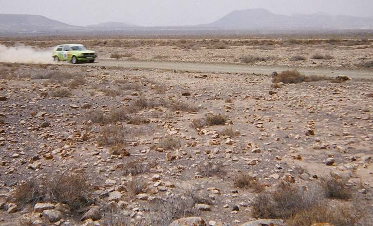
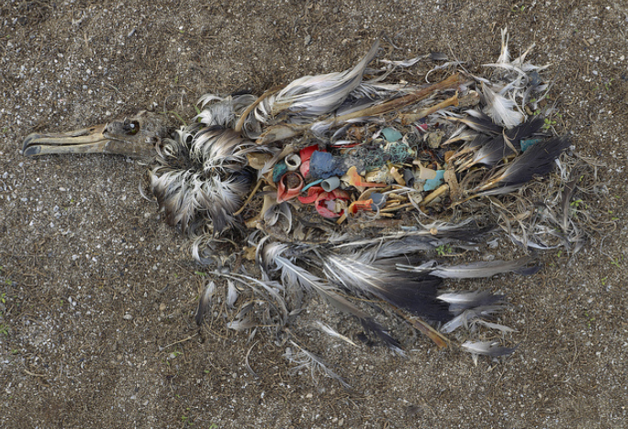

Luz verde al rally Isla de los Volcanes que afecta a la hubara canaria, una especie endémica en Peligro de Extinción
Este miércoles 30 se ha anunciado el recorrido definitivo del rally Isla de los Volcanes 2022.
Varios de los tramos planteados atraviesan zonas clave para una especie catalogada En Peligro de Extinción, como es la
hubara canaria, que además en estas fechas ya ha iniciado su ciclo reproductivo...Leer más

¿Qué tiene que ver Black Friday con la conservación de las aves?
Black Friday es solo la cúspide de un sistema frenético de producción y consumo que practicamos durante todo el
año. El problema no es el Black Friday per se, los problemas generados durante “la gran fiesta del consumismo”
son los mismos que durante el resto del año, pero cada viernes negro se hace más visible todo lo que se esconde
el resto de los días...Leer más